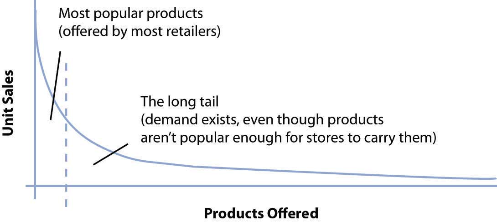
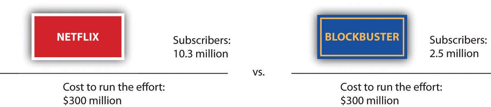

After studying this section you should be able to do the following:
Entrepreneurs are supposed to want to go public. When a firm sells stock for the first time, the company gains a ton of cash to fuel expansion and its founders get rich. Going public is the dream in the back of the mind of every tech entrepreneur. But in 2007, Netflix founder and CEO Reed Hastings told Fortune that if he could change one strategic decision, it would have been to delay the firm’s initial public stock offering (IPO)Also known as “going public.” The first time a firm sells stock to the public..M. Boyle, “Questions for… Reed Hastings,” Fortune, May 23, 2007. “If we had stayed private for another two to four years, not as many people would have understood how big a business this could be.” Once Netflix was a public company, financial disclosure rules forced the firm to reveal that it was on a money-minting growth tear. Once the secret was out, rivals showed up.
Hollywood’s best couldn’t have scripted a more menacing group of rivals for Hastings to face. First in line with its own DVD-by-mail offering was Blockbuster, a name synonymous with video rental. Some forty million U.S. families were already card-carrying Blockbuster customers, and the firm’s efforts promised to link DVD-by-mail with the nation’s largest network of video stores. Following close behind was Wal-Mart—not just a big Fortune 500 company but the largest firm in the United States ranked by sales. In Netflix, Hastings had built a great firm, but let’s face it, his was a dot-com, an Internet pure playA firm that focuses on a specific product, service, or business model. An Internet pure play is a firm that only operates through the Internet channel (i.e., with no physical stores or catalogs). without a storefront and with an overall customer base that seemed microscopic compared to these behemoths.
Before all this, Netflix was feeling so confident that it had actually raised prices. Customers loved the service, the company was dominating its niche, and it seemed like the firm could take advantage of a modest price hike, pull in more revenue, and use this to improve and expand the business. But the firm was surprised by how quickly the newcomers mimicked Netflix with cheaper rival efforts. This new competition forced Netflix to cut prices even lower than where they had been before the price increase. To keep pace, Netflix also upped advertising at a time when online ad rates were increasing. Big competitors, a price war, spending on the rise—how could Netflix possibly withstand this onslaught? Some Wall Street analysts had even taken to referring to Netflix’s survival prospects as “The Last Picture Show.”M. Conlin, “Netflix: Flex to the Max,” BusinessWeek, September 24, 2007.
Fast forward a year later and Wal-Mart had cut and run, dumping their experiment in DVD-by-mail. Blockbuster had been mortally wounded, hemorrhaging billions of dollars in a string of quarterly losses. And Netflix? Not only had the firm held customers, it grew bigger, recording record profits. The dot-com did it. Hastings, a man who prior to Netflix had already built and sold one of the fifty largest public software firms in the United States, had clearly established himself as one of America’s most capable and innovative technology leaders. In fact, at roughly the same time that Blockbuster CEO John Antioco resigned, Reed Hastings accepted an appointment to the Board of Directors of none other than the world’s largest software firm, Microsoft. Like the final scene in so many movies where the hero’s face is splashed across the news, Time named Hastings as one of the “100 most influential global citizens.”
Studying Netflix gives us a chance to examine how technology helps firms craft and reinforce a competitive advantage. We’ll pick apart the components of the firm’s strategy and learn how technology played a starring role in placing the firm atop its industry. We also realize that while Netflix emerged the victorious underdog at the end of the first show, there will be at least one sequel, with the final scene yet to be determined. We’ll finish the case with a look at the very significant challenges the firm faces as new technology continues to shift the competitive landscape.
Reed Hastings, a former Peace Corps volunteer with a Master’s in Computer Science, got the idea for Netflix when he was late in returning the movie Apollo 13 to his local video store. The forty-dollar late fee was enough to have bought the DVD outright with money left over. Hastings felt ripped off, and out of this initial outrage, Netflix was born. The model the firm eventually settled on was a DVD-by-mail service that charged a flat-rate monthly subscription rather than a per-disc rental fee. Customers don’t pay a cent in mailing expenses, and there are no late fees.
Netflix offers nine different subscription plans, starting at less than five dollars. The most popular is a $16.99 option that offers customers three movies at a time, and unlimited returns each month. Videos arrive in red Mylar envelopes. After tearing off the cover to remove the DVD, customers reveal prepaid postage and return address. When done watching videos, consumers just slip the DVD back into the envelope, reseal it with a peel-back sticky-strip, and drop the disc in the mail. Users make their video choices in their “request queue” at Netflix.com.
If a title isn’t available, Netflix simply moves to the next title in the queue. Consumers use the Web site to rate videos they’ve seen, specify their movie preferences, get video recommendations, check out DVD details, and even share their viewing habits and reviews. In 2007, the firm added a “Watch Now” button next to those videos that could be automatically streamed to a PC. Any customer paying at least $8.99 for a DVD-by-mail subscription plan can stream an unlimited number of videos each month at no extra cost.
After studying this section you should be able to do the following:
To understand Netflix strengths, it’s important to view the firm as its customers see it. And for the most part, what they see they like—a lot! Netflix customers are rabidly loyal and rave about the service. The firm repeatedly ranks at the top of customer satisfaction surveys. Ratings agency Forsee has named Netflix the number one e-commerce site in terms of customer satisfaction nine times in a row (placing it ahead of Apple and Amazon, among others). Netflix has also been cited as the best at satisfying customers by Nielsen and Fast Company, and was also named the Retail Innovator of the Year by the National Retail Federation.
Building a great brand, especially one online, starts with offering exceptional value to the customer. Don’t confuse branding with advertising. During the dot-com era, firms thought brands could be built through Super Bowl ads and expensive television promotion. Advertising can build awareness, but brands are built through customer experience. This is a particularly important lesson for online firms. Have a bad experience at a burger joint and you might avoid that location but try another of the firm’s outlets a few blocks away. Have a bad experience online and you’re turned off by the firm’s one and only virtual storefront. If you click over to an online rival, the offending firm may have lost you forever. But if a firm can get you to stay through quality experience; switching costs and data-driven value might keep you there for a long, long time, even when new entrants try to court you away.
If brand is built through customer experience, consider what this means for the Netflix subscriber. They expect the firm to offer a huge selection, to be able to find what they want, for it to arrive on time, for all of this to occur with no-brainer ease of use and convenience, and at a fair price. Technology drives all of these capabilities, so tech is at the very center of the firm’s brand building efforts. Let’s look at how the firm does it.
Customers have flocked to Netflix in part because of the firm’s staggering selection. A traditional video store (and Blockbuster had some 7,800 of them) stocks roughly three thousand DVD titles on its shelves. For comparison, Netflix is able to offer its customers a selection of over one hundred thousand DVD titles, and rising! At traditional brick and mortar retailers, shelf space is the biggest constraint limiting a firm’s ability to offer customers what they want when they want it. Just which films, documentaries, concerts, cartoons, TV shows, and other fare make it inside the four walls of a Blockbuster store is dictated by what the average consumer is most likely to be interested in. To put it simply, Blockbuster stocks blockbusters.
Finding the right product mix and store size can be tricky. Offer too many titles in a bigger storefront and there may not be enough paying customers to justify stocking less popular titles (remember, it’s not just the cost of the DVD—firms also pay for the real estate of a larger store, the workers, the energy to power the facility, etc.). You get the picture—there’s a breakeven point that is arrived at by considering the geographic constraint of the number of customers that can reach a location, factored in with store size, store inventory, the payback from that inventory, and the cost to own and operate the store. Anyone who has visited a video store only to find a title out of stock has run up against the limits of the physical store model.
But many online businesses are able to run around these limits of geography and shelf space. Internet firms that ship products can get away with having just a few highly automated warehouses, each stocking just about all the products in a particular category. And for firms that distribute products digitally (think songs on iTunes), the efficiencies are even greater because there’s no warehouse or physical product at all (more on that later).
Offer a nearly limitless selection and something interesting happens: there’s actually more money to be made selling the obscure stuff than the hits. Music service Rhapsody makes more from songs outside of the top ten thousand than it does from songs ranked above ten thousand. At Amazon.com, roughly 60 percent of books sold are titles that aren’t available in even the biggest Borders or Barnes & Noble Superstores.C. Anderson, “The Long Tail,” Wired 12, no. 10 (October 2004), http://www.wired.com/wired/archive/12.10/tail.html. And at Netflix, roughly 75 percent of DVD titles shipped are from back-catalog titles, not new releases (at Blockbuster outlets the equation is nearly flipped, with some 70 percent of business coming from new releases).B. McCarthy, “Netflix, Inc.” (remarks, J. P. Morgan Global Technology, Media, and Telecom Conference, Boston, May 18, 2009). Consider that Netflix sends out forty-five thousand different titles each day. That’s fifteen times the selection available at your average video store! Each quarter, roughly 95 percent of titles are viewed—that means that every few weeks Netflix is able to find a customer for nearly every DVD title that has ever been commercially released.
This phenomenon whereby firms can make money by selling a near-limitless selection of less-popular products is known as the long tailIn this context, refers to an extremely large selection of content or products. The long tail is a phenomenon whereby firms can make money by offering a near-limitless selection.. The term was coined by Chris Anderson, an editor at Wired magazine, who also wrote a best-selling business book by the same name. The “tail” (see Figure 3.2 "The Long Tail") refers to the demand for less popular items that aren’t offered by traditional brick and mortar shops. While most stores make money from the area under the curve from the vertical axis to the dotted line, long tail firms can also sell the less popular stuff. Each item under the right part of the curve may experience less demand than the most popular products, but someone somewhere likely wants it. And as demonstrated from the examples above, the total demand for the obscure stuff is often much larger than what can be profitably sold through traditional stores alone. While some debate the size of the tail (e.g., whether obscure titles collectively are more profitable for most firms), two facts are critical to keep above this debate: (1) selection attracts customers and (2) the Internet allows large-selection inventory efficiencies that offline firms can’t match.
Figure 3.2 The Long Tail
The long tail works because the cost of production and distribution drop to a point where it becomes economically viable to offer a huge selection. For Netflix, the cost to stock and ship an obscure foreign film is the same as sending out the latest Will Smith chartbuster. The long tail gives the firm a selection advantage (or one based on scale) that traditional stores simply cannot match.
For more evidence that there is demand for the obscure stuff, consider Bollywood cinema—a term referring to films produced in India. When ranked by the number of movies produced each year, Bollywood is actually bigger than Hollywood, but in terms of U.S. demand, even the top-grossing Hindi film might open in only one or two American theaters, and few video stores carry many Bollywood DVDs. Again, we see the limits that geography and shelf space impose on traditional stores. As Anderson puts it, when it comes to traditional methods of distribution, “an audience too thinly spread is the same as no audience at all.”C. Anderson, “The Long Tail,” Wired 12, no. 10 (October 2004), http://www.wired.com/wired/archive/12.10/tail.html. While there are roughly 1.7 million South Asians living in the United States, Bollywood fans are geographically disbursed, making it difficult to offer content at a physical storefront. Fans of foreign films would often find the biggest selection at an ethnic grocery store, but even then, that wouldn’t be much. Enter Netflix. The firm has found the U.S. fans of South Asian cinema, sending out roughly one hundred thousand Bollywood DVDs a month. As geographic constraints go away, untapped markets open up!
The power of Netflix can revive even well-regarded work by some of Hollywood’s biggest names. In between The Godfather and The Godfather Part II, director Francis Ford Coppola made The Conversation, a film starring Gene Hackman that, in 1975, was nominated for a Best Picture Academy Award. Coppola has called “The Conversation” the finest film he has ever made,D. Leonhardt, “What Netflix Could Teach Hollywood,” New York Times, June 7, 2006. but it was headed for obscurity as the ever-growing pipeline of new releases pushed the film off of video store shelves. Netflix was happy to pick up The Conversation and put it in the long tail. Since then, the number of customers viewing the film has tripled, and on Netflix, this once underappreciated gem became the thirteenth most watched film from its time period.
For evidence on Netflix’s power to make lucrative markets from nonblockbusters, visit the firm’s “Top 100 page.”http://www.netflix.com/Top100. You’ll see a list loaded with films that were notable for their lack of box office success. As of this writing the number one rank had been held for nearly four years in a row, not by a first-run mega-hit, but by the independent film Crash (an Oscar winner, but box office weakling).R. Elder, “‘Crash’ Remains Top DVD Rental,” Chicago Tribune, April 14, 2009.
Netflix has used the long tail to its advantage, crafting a business model that creates close ties with film studios. Studios love Netflix because in most cases they earn a percentage of the subscription revenue for every disk sent out to a Netflix customer. In exchange, Netflix gets to buy the studio’s DVDs at cost. The movie business is characterized by large fixed costs up front. Studio marketing budgets are concentrated on films when they first appear in theaters, and when they’re first offered on DVD. After that, studios are done promoting a film, focusing instead on its most current titles. But Netflix is able to find an audience for a film without the studios spending a dime on additional marketing. Since so many of the titles viewed on Netflix are in the long tail, revenue sharing is all gravy for the studios—additional income they would otherwise be unlikely to get. It’s a win-win for both ends of the supply chain. These supplier partnerships grant Netflix a sort of soft bargaining power that’s distinctly opposite the strong-arm price bullying that giants like Wal-Mart are often accused of.
Netflix’s coziness with movie studios is particularly noteworthy, given that the film industry has often viewed new technologies with a suspicion bordering on paranoia. In one of the most notorious incidents, Jack Valenti, the former head of the Motion Picture Association of American (MPAA) once lobbied the U.S. Congress to limit the sale of home video recorders, claiming “the VCR is to the American film producer and the American public as the Boston strangler is to the woman home alone.”J. Bates, “Formidable Force for Hollywood,” Los Angeles Times, April 27, 2007.
Not only was the statement over the top, Jack couldn’t have been more wrong. Revenue from the sale of VCR tapes would eventually surpass the take from theater box offices, and today, home video brings in about two times box office earnings.
Netflix proves there’s both demand and money to be made from the vast back catalog of film and TV show content. But for the model to work best, the firm needed to address the biggest inefficiency in the movie industry—“audience finding,” that is, matching content with customers. To do this, Netflix leverages some of the industry’s most sophisticated technology, a proprietary recommendation system that the firm calls Cinematch.
Each time a customer visits Netflix after sending back a DVD, the service essentially asks “so, how did you like the movie?” With a single click, each film can be rated on a scale of one to five stars. If you’re new to Netflix, the service can prompt you with a list of movies (or you can search out and rate titles on your own). Love Rushmore but hate The Life Aquatic? Netflix wants to know.
The magic of Cinematch happens not by offering a gross average user rating—user tastes are too varied and that data’s too coarse to be of significant value. Instead, Cinematch develops a map of user ratings and steers you toward titles preferred by people with tastes that are most like yours. Techies and marketers call this trick collaborative filteringA classification of software that monitors trends among customers and uses this data to personalize an individual customer’s experience.. The term refers to a classification of software that monitors trends among customers and uses this data to personalize an individual customer’s experience. Input from collaborative filtering software can be used to customize the display of a Web page for each user so that an individual is greeted only with those items the software predicts they’ll most likely be interested in. The kind of data mining done by collaborative filtering isn’t just used by Netflix; other sites use similar systems to recommend music, books, even news stories. While other firms also employ collaborative filtering, Netflix has been at this game for years, and is constantly tweaking its efforts. The results are considered the industry gold standard.
Collaborative filtering software is powerful stuff, but is it a source of competitive advantage? Ultimately it’s just math. Difficult math, to be sure, but nothing prevents other firms from working hard in the lab, running and refining tests, and coming up with software that’s as good, or perhaps one day even better than Netflix’s offering. But what the software has created for the early-moving Netflix is an enormous data advantage that is valuable, results yielding, and impossible for rivals to match. Even if Netflix gave Cinematch to its competitors, they’d be without the over-two-billion ratings that the firm has amassed (according to the firm, users add about a million new ratings to the system each day). More ratings make the system seem smarter, and with more info to go on, Cinematch can make more accurate recommendations than rivals.
Evidence suggests that users trust and value Cinematch. Recommended titles make up over 60 percent of the content users place in their queues—an astonishing penetration rate. Compare that to how often you’ve received a great recommendation from the sullen teen behind the video store counter. While data and algorithms improve the service and further strengthen the firm’s brand, this data is also a switching cost. Drop Netflix for Blockbuster and the average user abandons the two hundred or more films they’ve rated. Even if one is willing to invest the time in recreating their ratings on Blockbuster’s site, the rival will still make less accurate recommendations because there are fewer users and less data to narrow in on similarities across customers.
One way to see how strong these switching costs are is to examine the Netflix churn rateThe rate at which customers leave a product or service.. Churn is a marketing term referring to the rate at which customers leave a product or service. A low churn is usually key to profitability because it costs more to acquire a customer than to keep one. And the longer a customer stays with the firm, the more profitable they become and the less likely they are to leave. If customers weren’t completely satisfied with the Netflix experience, many would be willing to churn out and experiment with rivals offering cheaper service. However, the year after Blockbuster and Wal-Mart launched with copycat efforts, the rate at which customers left Netflix actually fell below 4 percent, an all-time low. And the firm’s churn rates have continued to fall over time. By the middle of 2008, rates for customers in Netflix most active regions of the country were below 3 percent, meaning fewer than three in one hundred Netflix customers canceled their subscriptions each year.Netflix Investor Day presentation, May 2008, accessed via http://ir.netflix.com/events.cfm. To get an idea of how enviable the Netflix churn rates are, consider that in 2007 the mobile phone industry had a churn rate of 38.6 percent, while roughly one in four U.S. banking customers defected that year.“Industry Customer Churn Rate Increases 15%,” GeoConnexion, January 8, 2008. The article contains a summary of the Pittney Bowes G1 finding.
All of this impacts marketing costs, too. Happy customers refer friends (free marketing from a source consumers trust more than a TV commercial). Ninety-four percent of Netflix subscribers say they have recommended the service to someone else, and 71 percent of new subscribers say an existing subscriber has encouraged them to sign up. It’s no wonder subscriber acquisition costs have been steadily falling, further contributing to the firm’s overall profitability.
Netflix isn’t content to stand still with its recommendation engine. Recognizing that there may be useful expertise outside its Los Gatos, California headquarters, the firm launched a crowdsourcingThe act of taking a job traditionally performed by a designated agent (usually an employee) and outsourcing it to an undefined generally large group of people in the form of an open call. effort known as The Netflix Prize (for more on crowdsourcing, see Chapter 6 "Peer Production, Social Media, and Web 2.0").
The goal was simple: Offer one million dollars to the first group or individual who can improve Cinematch’s ratings accuracy by 10 percent. In order to give developers something to work with, the firm turned over a large ratings database (with customer-identifying information masked, of course). The effort has attracted over 30,000 teams from 170 countries. Not bad when you consider that one million dollars would otherwise fund just four senior Silicon Valley engineers for about a year. And the effort earned Netflix a huge amount of PR, as newspapers, magazines, and bloggers chatted up the effort.
While Netflix gains access to any of the code submitted as part of the prize, it isn’t exclusive access. The Prize underscores the value of the data asset. Even if others incorporate the same technology as Netflix, the firm still has user data (and attendant customer switching costs) that prevent rivals with equal technology from posing any real threat. Results incorporating many innovations offered by contest participants were incorporated into Cinematch, even before the prize was won.
As the contest dragged on, many participants wondered if the 10 percent threshold could ever be reached. While many teams grew within striking distance, a handful of particularly vexing titles thwarted all algorithms. Perhaps the most notorious title was Napoleon Dynamite. The film is so quirky, and Netflix customers so polarized, that there’s little prior indicator to suggest if you’re in the love it or hate it camp. One contestant claimed that single film was responsible for 15 percent of the gap between his team’s effort and the million dollars.C. Thompson, “If You Liked This, You’re Sure to Love That,” New York Times, November 21, 2008.
The eventual winner turned out to be a coalition of four teams from four countries—prior rivals who sought to pool their noggins and grab fame and glory (even if their individual prize split was less). BellKor’s Pragmatic Chaos, the first team to cross the 10 percent threshold, included a pair of coders from Montreal; two U.S. researchers from AT&T Labs; a scientist from Yahoo! Research, Israel; and a couple of Austrian consultants.B. Patterson, “Netflix Prize Competitors Join Forces, Cross Magic 10-Percent Mark,” Yahoo! Tech, June 29, 2009. It’s safe to say that without the Netflix Prize, these folks would likely never have met, let alone collaborated.
Many critically acclaimed films that failed to be box office hits have gained a second life on Netflix, netting significant revenue for the studios, with no additional studio marketing. Babel, The Queen, and The Last King of Scotland are among the films that failed to crack the top twenty in the box office, but ranked among the most requested titles on Netflix during the year after their release. Netflix actually delivered more revenue to Fox from The Last King of Scotland than it did from the final X-Men film.Netflix Investor Day presentation, May 2008, accessed via http://ir.netflix.com/events.cfm.
In the true spirit of the long tail, Netflix has begun acquiring small market titles for exclusive distribution. One of its first efforts involved the Oscar-nominated PBS documentary, Daughters from Danang. PBS hadn’t planned to distribute the disc after the Academy Awards; it was simply too costly to justify producing a run of DVDs that almost no retailer would carry. But in a deal with PBS, Netflix assumed all production costs in exchange for exclusive distribution rights. For months after, the film repeatedly ranked in the Top 15 most requested titles in the documentary category. Cost to PBS—nothing.C. Anderson, “The Long Tail,” Wired 12, no. 10 (October 2004), http://www.wired.com/wired/archive/12.10/tail.html.
Tech also lies at the heart of the warehouse operations that deliver customer satisfaction and enhance brand value. As mentioned earlier, brand is built through customer experience, and a critical component of customer experience is for subscribers to get their DVDs as quickly as possible. In order to do this, Netflix has blanketed the country with a network of fifty-eight ultrahigh-tech distribution centers that collectively handle in excess of 1.8 million DVDs a day. These distribution centers are purposely located within driving distance of 119 U.S. Postal Service (U.S.P.S.) processing and distribution facilities.
By 4:00 a.m. each weekday, Netflix trucks collect the day’s DVD shipments from these U.S.P.S. hubs and returns the DVDs to the nearest Netflix center. DVDs are fed into custom-built sorters that handle disc volume on the way in and the way out. That same machine fires off an e-mail as soon as it detects your DVD was safely returned (now rate it for Cinematch). Most DVDs never hit the restocking shelves. Scanners pick out incoming titles that are destined for other users and place these titles into a sorted outbound pile with a new, appropriately addressed red envelope. Netflix not only helps out the postal service by picking up and dropping off the DVDs at its hubs, it presorts all outgoing mail for faster delivery. This extra effort has a payoff—Netflix gets the lowest possible postal rates for first-class mail delivery. And despite the high level of automation, 100 percent of all discs are inspected by hand so that cracked ones can be replaced, and dirty ones given a wipe down.B. McCarthy, “Netflix, Inc.” (remarks, J. P. Morgan Global Technology, Media, and Telecom Conference, Boston, May 18, 2009). Total in and out turnaround time for a typical Netflix DVD is just eight hours!N. Kenny, “Special Report: Inside Netflix,” WMC TV, July 7, 2009.
First-class mail takes only one day to be delivered within a fifty-mile radius, so the warehouse network allows Netflix to service over 97 percent of its customer base within a two-day window—one day is allotted for receipt; early the next morning the next item in their queue is processed; and the new title arrives at the customer’s address by that afternoon. And in 2009, the firm added Saturday processing. All this means a customer with the firm’s most popular “three disc at a time” plan could watch a movie a day and never be without a fresh title.
Warehouse processes don’t exist in a vacuum; they are linked to Cinematch to offer the firm additional operational advantages. The software recommends movies that are likely to be in stock so users aren’t frustrated by a wait.
Everyone on staff is expected to have an eye on improving the firm’s processes. Every warehouse worker gets a free DVD player and Netflix subscription so that they understand the service from the customer’s perspective and can provide suggestions for improvement. Quality management features are built into systems supporting nearly every process at the firm, allowing Netflix to monitor and record the circumstances surrounding any failures. When an error occurs, a tiger team of quality improvement personnel swoops in to figure out how to prevent any problems from recurring. Each phone call is a cost, not a revenue enhancement, and each error increases the chance that a dissatisfied customer will bolt for a rival.
By paying attention to process improvements and designing technology to smooth operations, Netflix has slashed the number of customer representatives even as subscriptions ballooned. In the early days, when the firm had one hundred and fifteen thousand customers, Netflix had one hundred phone support reps. By the time the customer base had grown thirtyfold, errors had been reduced to so that only forty-three reps were needed.J. McGregor, “High Tech Achiever,” Fast Company, October 2005. Even more impressive, because of the firm’s effective use of technology to drive the firm’s operations, fulfillment costs as a percentage of revenue have actually dropped even though postal rates have increased and Netflix has cut prices.
Netflix executives are quite frank that the technology and procedures that make up their model can be copied, but they also realize the challenges that any copycat rival faces. Says the firm’s VP of Operations Andy Rendich, “Anyone can replicate the Netflix operations if they wish. It’s not going to be easy. It’s going to take a lot of time and a lot of money.”Netflix Investor Day presentation, 2008, accessed via http://ir.netflix.com/events.cfm.
While we referred to Netflix as David to the goliaths of Wal-Mart and Blockbuster, within the DVD-by-mail segment Netflix is now the biggest player by far, and this size gives the firm significant scale advantages. The yearly cost to run a Netflix-comparable nationwide delivery infrastructure is about three hundred million dollars.S. Reda and D. Schulz, “Concepts that Clicked,” Stores, May 2008. Think about how this relates to economies of scale. In the Chapter 2 "Strategy and Technology" we said that firms enjoy scale economies when they are able to leverage the cost of an investment across increasing units of production. Even if rivals have identical infrastructures, the more profitable firm will be the one with more customers (see Figure 3.7). And the firm with better scale economies is in a position to lower prices, as well as to spend more on customer acquisition, new features, or other efforts. Smaller rivals have an uphill fight, while established firms that try to challenge Netflix with a copycat effort are in a position where they’re straddling markets, unable to gain full efficiencies from their efforts.
Figure 3.7
Running a nationwide sales network costs an estimated $300 million a year. But Netflix has over 3.5 times more subscribers than Blockbuster. Which firm has economies of scale?
For Blockbuster, the arrival of Netflix plays out like a horror film where it is the victim. For several years now, the in-store rental business has been a money loser. Things got worse in 2005 when Netflix pressure forced Blockbuster to drop late fees, costing it about four hundred million dollars.T. Mullaney, “Netflix: The Mail-Order House That Clobbered Blockbuster,” BusinessWeek, May 25, 2006. The Blockbuster store network once had the advantage of scale, but eventually its many locations were seen as an inefficient and bloated liability. Between 2006 and 2007, the firm shuttered over 570 stores.A. Farrell, “Blockbuster’s CEO Ousted,” Forbes, July 2, 2007. By 2008, Blockbuster had been in the red for ten of the prior eleven years. During a three-year period that included the launch of its Total Access DVD-by-mail effort, Blockbuster lost over four billion dollars.MacDonald, 2008. The firm tried to outspend Netflix on advertising, even running Super Bowl ads for Total Access in 2007, but a money loser can’t outspend its more profitable rival for long, and it has since significantly cut back on promotion. Blockbuster also couldn’t sustain subscription rates below Netflix’s, so it has given up its price advantage. In early 2008, Blockbuster even briefly pursued a merger with another struggling giant, Circuit City, a strategy that has left industry experts scratching their heads. A Viacom executive said about the firm, “Blockbuster will certainly not survive and it will not be missed.”E. Epstein, “Hollywood’s New Zombie: The Last Days of Blockbuster,” Slate, January 9, 2006, http://www.slate.com/id/2133995. This assessment has to sting, given that Viacom was once Blockbuster’s parent (the firm was spun off in 2004).
For Netflix, what delivered the triple scale advantage of the largest selection; the largest network of distribution centers; the largest customer base; and the firm’s industry-leading strength in brand and data assets? Moving first. Timing and technology don’t always yield sustainable competitive advantage, but in this case, Netflix leveraged both to craft what seems to be an extraordinarily valuable pool of assets that continue to grow and strengthen over time. To be certain, competing against a wounded giant like Blockbuster will remain difficult. The latter firm has few options and may spend itself into oblivion, harming Netflix in its collapsing gasp. And as we’ll see in the next section, while technology shifts helped Netflix attack Blockbuster’s once-dominant position, even newer technology shifts may threaten Netflix. As they like to say in the mutual fund industry “past results aren’t a guarantee of future returns.”
After studying this section you should be able to do the following:
Nicholas Negroponte, the former head of MIT’s Media Lab, wrote a now classic essay on the shift from atoms to bitsThe idea that many media products are sold in containers (physical products, or atoms) for bits (the ones and zeros that make up a video file, song, or layout of a book). As the Internet offers fast wireless delivery to TVs, music players, book readers, and other devices, the “atoms” of the container aren’t necessary. Physical inventory is eliminated, offering great cost savings.. Negroponte pointed out that most media products are created as bits—digital files of ones and zeros that begin their life on a computer. Music, movies, books, and newspapers are all created using digital technology. When we buy a CD, DVD, or even a “dead tree” book or newspaper, we’re buying physical atoms that are simply a container for the bits that were created in software—a sound mixer, a video editor, or a word processor.
The shift from atoms to bits is realigning nearly every media industry. Newspapers struggle as readership migrates online and once-lucrative classified ads and job listings shift to the bits-based businesses of Craigslist, Monster.com, and LinkedIn. Apple dominates music sales, selling not a single “atom” of physical CDs, while most of the atom-selling “record store” chains of a decade ago are bankrupt. Amazon has even begun delivering digital books, developing the Kindle digital reader. Who needs to kill a tree, spill ink, fill a warehouse, and roll a gas-guzzling truck to get you a book? Kindle can slurp your purchases through the air and display them on a device lighter than any college textbook. When Amazon CEO Bezos unveiled the Kindle DX at a press event at Pace University in Spring 2009, he indicated that Kindle book sales were accounting for 35 percent of sales for the two hundred and seventy-five thousand titles available for the deviceA. Penenberg, “Amazon Taps Its Inner Apple,” Fast Company, July 1, 2009.—a jaw-dropping impact for a device many had thought to be an expensive, niche product for gadget lovers.
Video is already going digital, but Netflix became a profitable business by handling the atoms of DVDs. The question is, will the atoms to bits shift crush Netflix and render it as irrelevant as Hastings did Blockbuster? Or can Reed pull off yet another victory and recast his firm for the day that DVDs disappear?
Concerns over the death of the DVD and the relentless arrival of new competitors are probably the main cause for Netflix’s stock volatility these past few years. Through 2009, the firm’s growth, revenue, and profit graphs all go up and to the right, but the stock has experienced wild swings as pundits have mostly guessed wrong about the firm’s imminent demise (one well-known Silicon Valley venture capitalist even referred to the firm as “an ice cube in the sun,”M. Copeland, “Netflix Lives! Video Downloads Haven’t Made the DVD-by-Mail Business Obsolete,” Fortune, April 21, 2008. a statement Netflix countered with four years of record-breaking growth and profits). The troughs on the Netflix stock graph have proven great investment opportunities for the savvy. NFLX was up some 40 percent for the first half of 2009, a time when the sub-prime crisis hammered major exchanges. The firm continued to enjoy its most successful quarters as a public company, and subscriber growth rose even as DVD sales fall. But even the most bullish investor knows there’s no stopping the inevitable shift from atoms to bits, and the firm’s share price swings continue. When the DVD dies, the high-tech shipping and handling infrastructure that Netflix has relentlessly built will be rendered worthless.
Reed Hastings clearly knows this, and he has a plan. “We named the company Netflix for a reason; we didn’t name it DVDs-by-mail.”M. Boyle, “Questions for…Reed Hastings,” Fortune, May 23, 2007. But he also prepared the public for a first-cut service that was something less than we’d expect from the long tail poster child. When speaking about the launch of the firm’s Internet video streaming offering in January 2007, Hastings said it would be “underwhelming.” The two biggest limitations of this initial service? As we’ll see below, not enough content, and figuring out how to squirt the bits to a television.
First the content. Two years after the launch of Netflix streaming option (enabled via a “Watch Now” button next to movies that can be viewed online), only 12,000 videos were offered, just 12 percent of the firm’s long tail. And not the best 12 percent. Why so few titles? It’s not just studio reluctance or fear of piracy. There are often complicated legal issues involved in securing the digital distribution rights for all of the content that makes up a movie. Music, archival footage, and performer rights may all hold up a title from being available under “Watch Now.” The 2007 Writers Guild strike occurred largely due to negotiations over digital distribution, showing just how troublesome these issues can be.
Add to that the exclusivity contracts negotiated by key channels, in particular the so-called “premium” television networks. Film studios release their work in a system called windowingIndustry practice whereby content (usually a motion picture) is available to a given distribution channel for a specified time period or “window,” usually under a different revenue model (e.g., ticket sale, purchase, license fee).. Content is available to a given distribution channel (in theaters, through hospitality channels like hotels and airlines, on DVD, via pay-per-view, via pay cable, then broadcast commercial TV) for a specified time window, usually under a different revenue model (ticket sales, disc sales, license fees for broadcast). Pay television channels in particular have negotiated exclusive access to content as they strive to differentiate themselves from one another. This exclusivity means that even when a title becomes available for streaming by Netflix, it may disappear when a pay TV window opens up. If HBO or Showtime has an exclusive for a film, it’s pulled from the Netflix streaming service until the exclusive pay TV time window closes. A 2008 partnership with the Starz network helped provide access to some content locked up inside pay television windows, and deals with Disney and CBS allow for streaming of current-season shows.S. Portnoy, “Netflix News: Starz Catalog Added to Online Service, Streaming to PS3, Xbox 360 through PlayOn Beta Software,” ZDNet, October 2, 2008, http://blogs.zdnet.com/home-theater/?p=120. But the firm still has a long way to go before the streaming tail seems comparably long when compared against its disc inventory.
And there’s also the influence of the king of DVD sales: Wal-Mart. The firm accounts for about 40 percent of DVD sales—a scale that delivers a lot of the bargaining power it has used to “encourage” studios to hold content from competing windows or to limit offering titles at competitive pricing during the peak new release DVD period.R. Grover, “Wal-Mart and Apple Battle for Turf,” BusinessWeek, August 31, 2006. Taken together it’s clear that shifting the long tail from atoms to bits will be significantly more difficult than buying DVDs and stacking them in a remote warehouse.
The other major problem lies in getting content to the place where most consumers want to watch it: the living room TV. Netflix’s “Watch Now” button first worked only on Windows PCs. Although the service was introduced in January 2007, the months before were fueled with speculation that the firm would partner with TiVo. Just one month later, TiVo announced its partner—Amazon.com. At that point Netflix found itself up against a host of rivals that all had a path to the television: Apple had its own hardware solution in Apple TV (not to mention the iPod and iPhone for portable viewing), the cable companies delivered OnDemand through their set-top boxes, and now Amazon had TiVo.
An internal team at Netflix developed a prototype set top box that Hastings himself supported offering. But most customers aren’t enthusiastic about purchasing yet another box for their set top, the consumer electronics business is brutally competitive, and selling hardware would introduce an entirely new set of inventory, engineering, marketing, distribution, and competitive complexities.
The solution Netflix eventually settled on was to think beyond one hardware alternative and instead recruit others to provide a wealth of choice. The firm developed a software platform and makes this available to firms seeking to build Netflix access into their devices. Today Netflix streaming is baked into televisions and DVD players from LG, Samsung, Sony, and Vizio, among others. It’s also available on all major video game consoles—either as a direct feature or third-party software add-on. Even TiVo now streams Netflix. And that internally developed Netflix set-top box? The group was spun out to form Roku, an independent firm that launched their own $99 Netflix streamer.
The switch to Blu-ray DVDs may offer the most promise. Blu-ray players are on the fast track to commoditization. If consumer electronics firms incorporate Netflix access into their players as a way to attract more customers with an additional, differentiating feature, Hastings’s firm could end up with more living room access than either Amazon or Apple. There are seventy-three million households in the United States that have a DVD player and an Internet connection. Should a large portion of these homes end up with a Netflix-ready Blu-ray player, Hastings will have built himself an enviable base through which to grow the video streaming business.
Who’s going to win the race for delivering bits to the television is still very much an uncertain bet. The models all vary significantly. Apple’s early efforts were limited, with the firm offering only video purchases for Apple TV, but eventually moving to online “rentals” that can also play on iPods. Movie studios are now all in Apple’s camp, although the firm did temporarily lose NBC’s television content in a dispute over pricing. Amazon and Microsoft also have online rentals and purchase services, and can get their content to the television via TiVo and XBox, respectively (yes, this makes Microsoft both a partner and a sort of competitor, a phenomenon often referred to as coopetitionWhen firms find themselves in situations where they are both competitors and collaborators, or “frenemies.” Technology is increasingly redefining products, pushing the boundaries of delivery channels, and creating situations where firms often find themselves in these collaborative/rival relationships., or frenemiesA. Brandenberger and B. Nalebuff, Co-Opetition: A Revolution Mindset That Combines Competition and Cooperation: The Game Theory Strategy That’s Changing the Game of Business (New York: Broadway Business, 1997); and S. Johnson, “The Frenemy Business Relationship,” Fast Company, November 25, 2008.). Hulu, a joint venture backed by NBC, Fox, and other networks, is free, earning money from ads that run like TV commercials. While Hulu has also received glowing reviews, the venture has lagged in offering a method to get streaming content to the television. Netflix pioneered “all-you-can-eat” subscription streaming. Anyone who has at least the $8.99 subscription plan can view an unlimited amount of video streams. And Blockbuster isn’t dead yet. It also streams over TiVo and has other offerings in the works.
There’s a clear upside to the model when it shifts to streaming; it will eliminate a huge chunk of costs associated with shipping and handling. Postage represents one-third of the firm’s expenses. A round-trip DVD mailing, even at the deep discounts Netflix receives from the U.S. Postal Service, runs about eighty cents. The bandwidth and handling costs to send bits to a TV set are around a nickel.B. McCarthy, “Netflix, Inc.” (remarks, J. P. Morgan Global Technology, Media, and Telecom Conference, Boston, May 18, 2009). At some point, if postage goes away, Netflix may be in a position to offer even greater profits to its studio suppliers, and to make more money itself, too.
Wrangling licensing costs presents a further challenge. Estimates peg Netflix 2009 streaming costs at about one hundred million dollars, up 250 percent in three years. But these expenses still deliver just a fraction of the long tail. Streaming licensing deals are tricky because they’re so inconsistent even when titles are available. Rates vary, with some offered via a flat rate for unlimited streams, a per-stream rate, a rate for a given number of streams, and various permutations in between. Some vendors have been asking as much as four dollars per stream for more valuable contentD. Rayburn, “Netflix Streaming Costs,” Streaming Media, June/July 2009.—a fee that would quickly erase subscriber profits, making any such titles too costly to add to the firm’s library. Remember, Netflix doesn’t charge more for streaming—it’s built into the price of its flat-rate subscriptions.
Any extra spending doesn’t come at the best time. The switch to Blu-ray DVDs means that Netflix will be forced into the costly proposition of carrying two sets of video inventory: standard and high-def. Direct profits may not be the driver. Rather, the service may be a feature that attracts new customers to the firm and helps prevent subscriber flight to rival video-on-demand efforts. The stealth arrival of a Netflix set-top box, in the form of upgraded Blu-ray DVD players, might open even more customer acquisition opportunities to the firm. Bought a Blu-ray player? For just nine dollars per month you can get a ticket to the all-you-can-eat Netflix buffet. And more customers ready to watch content streamed by Netflix may prime the pump for studios to become more aggressive in licensing more of their content. Many TV networks and movie studios are leery of losing bargaining power to a dominant firm, having witnessed how Apple now dictates pricing terms to music labels. The good will Netflix has earned over the years may pay off if it can become the studios’ partner of first choice.
While one day the firm will lose the investment in its warehouse infrastructure, nearly all assets have a limited lifespan. That’s why corporations depreciate assets, writing their value down over time. The reality is that the shift from atoms to bits won’t flick on like a light switch; it will be a hybrid transition that takes place over several years. If the firm can grab long-tail content, grow its customer base, and lock them in with the switching costs created by Cinematch (all big “ifs”), it just might emerge as a key player in a bits-only world.
Is the hybrid strategy a dangerous straddling gambit or a clever ploy to remain dominant? Netflix really doesn’t have a choice but to try. Hastings already has a long history as one of the savviest strategic thinkers in tech. As the networks say, stay tuned!